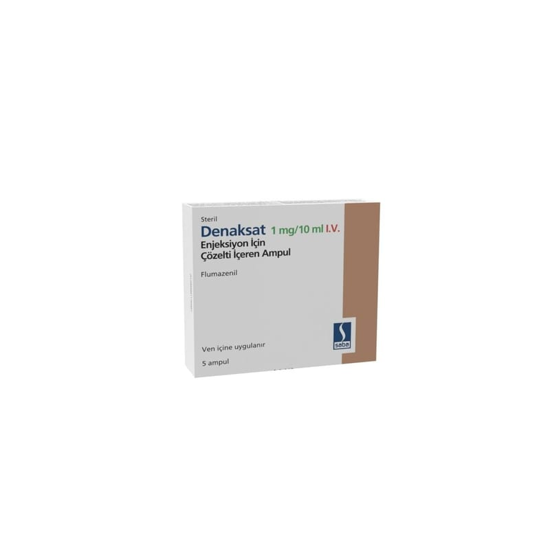

Denaksat 1 mg/10 ml I.V. Enjeksiyon İçin Çözelti İçeren Ampul, 5 Adet

Ne için kullanılır
KT · Bölüm 1DENAKSAT, etkin madde olarak flumazenil içeren, bir enjeksiyon veya enfüzyon çözeltisidir. Çözeltinin 1 mL’si 0,1 mg flumazenil ihtiva etmektedir. Her bir ampul, 1 mL çözelti içinde 0,5 mg flumazenil içerir. Her kutuda 1 mg/10 mL’lik 5 adet ampul bulunmaktadır.
DENAKSAT, benzodiazepinlerin (yatıştırıcı, uyku getirici, kas gevşetici ve kaygı/korku giderici özelliklere sahip özel grup) merkezi sakinleştirici etkilerinin tamamen veya kısmen tersine çevrilmesi için bir karşıt etkili maddedir (antidot).
Bu nedenle DENAKSAT, belirli tanı testlerinden sonra sizi uyandırmak için anestezide veya sakinleştirici koşullarda tutuluyorsanız yoğun bakımda kullanılabilir.
Ayrıca benzodiazepinlerle zehirlenme veya aşırı dozun teşhisi ve tedavisi için kullanılabilir. DENAKSAT, çocuklarda (1 yaşından büyük) benzodiazepinlerle sakinleştirici koşullar altında tutulduktan sonra onları uyandırmak için de kullanılabilir.